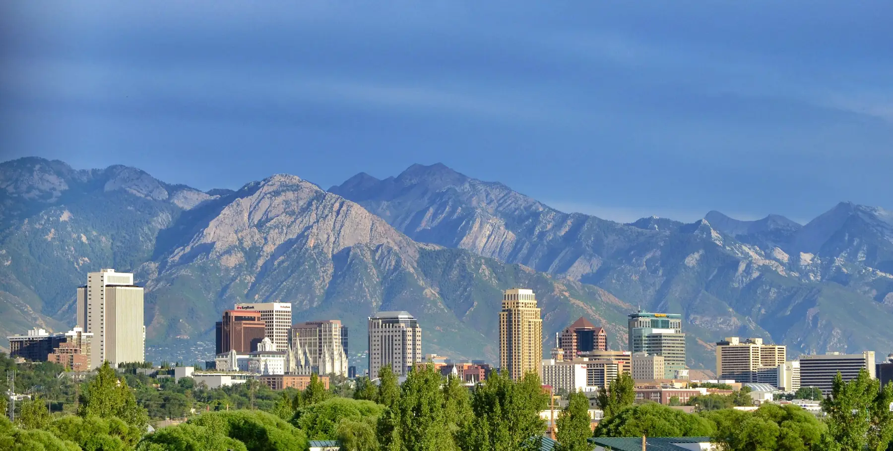

Salt Lake City · 165 Gregson Ave S
Plumber in Salt Lake City, above and below ground.
Stott Plumbing & Excavating is a plumber and excavating company in Salt Lake City, at 165 Gregson Ave S. From the pipes inside your walls to the line under your yard, call and talk to the crew.

Salt Lake City · Garrett, CC BY 2.0, via Wikimedia Commons
Plumbing & excavating
Where the pipe meets the dirt.
- Phone
- 801-467-2432
- Salt Lake City
- 165 Gregson Ave S
Salt Lake City, UT 84115 - Trade
- Plumber & excavating
Some plumbing problems end at a fixture. Others run out under the yard to the street. Stott Plumbing & Excavating handles plumbing and excavating from Gregson Ave in Salt Lake City.
Any job that digs in Utah starts with Blue Stakes of Utah 811 and a set of colored paint marks and flags. The guide below decodes them, and points out the lines that never get marked at all.
The 811 color code
What the paint on your lawn means
Before anyone digs, utility locators mark buried lines with paint and flags in a uniform color code. Tap a color to see what it marks.
Red
Electric power lines, cables, conduit and lighting cables
Colors: APWA uniform color code as listed by Virginia 811. Utah process: Blue Stakes of Utah 811 (notify at least 3 business days ahead; hand-dig within 2 feet of marks). Utah law requires operators to mark only the lines they own and maintain, usually up to the meter.
Not marked
Lines 811 won’t find
Water and sewer laterals
The pipes from the meter or main to your house are usually privately owned, so Blue Stakes says they may not be marked.
Detached garages and lampposts
Power run out to a detached garage or a yard lamppost is private wiring beyond the meter.
Sprinklers and irrigation
Sprinkler and irrigation lines belong to the property, not a utility.
Propane and septic
Lines connected to a propane tank or a septic system are private too. Blue Stakes suggests a private locator for these.
Source: Blue Stakes of Utah 811, Professional Excavator FAQs (archived May 2026).
Questions
Good to know
From the blogBlue Stakes 811 in Utah: what to know before you digHow Blue Stakes works, what the colors mean, and the private lines it won’t mark.
Read it01Where is Stott Plumbing & Excavating?
165 Gregson Ave S, Salt Lake City, UT 84115.
02How do I reach you?
Call 801-467-2432, or send the form on the contact page.
03Do I have to call 811 before digging in Utah?
Blue Stakes of Utah says state law requires anyone moving earth with tools or equipment to notify it at least 3 business days, but not more than 14 calendar days, before excavating. The service is free.
04Will 811 mark my sewer line?
Usually not. Utah law requires facility operators to mark only the lines they own and maintain, usually up to the meter. Water and sewer laterals are typically private.
Contact us
Plumbing or digging in Salt Lake? Call Stott.
Call Stott Plumbing & Excavating at 801-467-2432. 165 Gregson Ave S, Salt Lake City, UT 84115.
Contact us